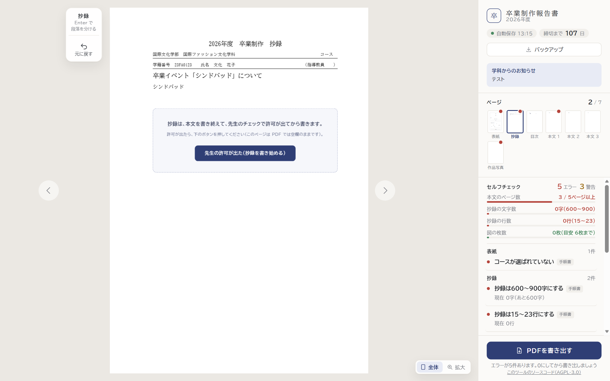
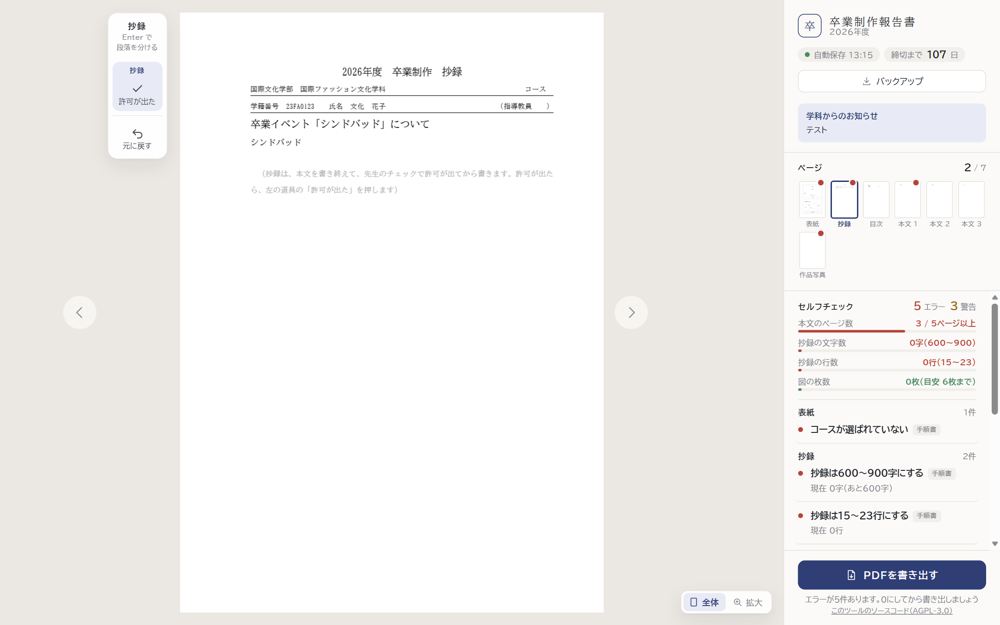
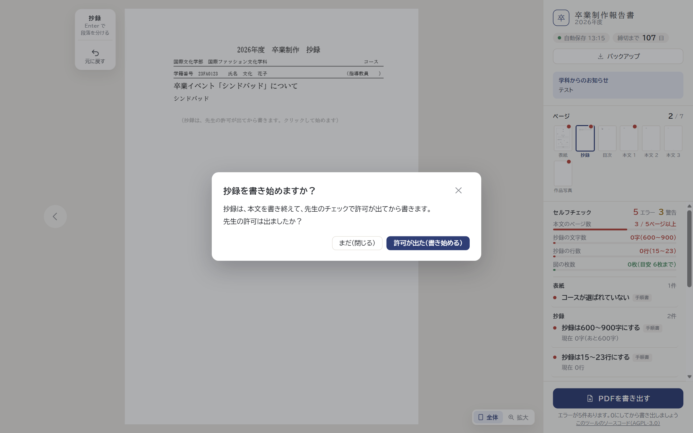

抄録は、本文を書き終えて先生の許可が出てから書く（許可が出る前の抄録のページ）
どの案も、許可が出るまでは抄録の字数・行数のチェックを出さず、学生が「許可が出た」を押すと抄録を書けるようになります（押した後は、今の抄録のページと同じ）。押したことは原稿と一緒に保存されます。
案1 抄録のページに案内とボタン抄録を書く欄に、案内と「先生の許可が出た」ボタンを出す。いちばん分かりやすい
案2 紙面には案内の文字、ボタンは左の道具紙面はほかの空欄と同じく薄い字の案内だけ。ボタンは、段落などを足すのと同じ左の道具に置く
案3 抄録をクリックすると確かめる紙面は薄い字の案内だけ。抄録の欄をクリックすると「先生の許可は出ましたか？」と確かめてから書き始める